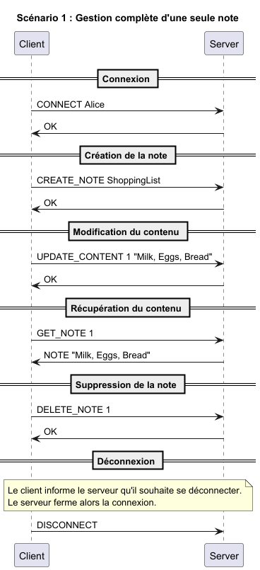
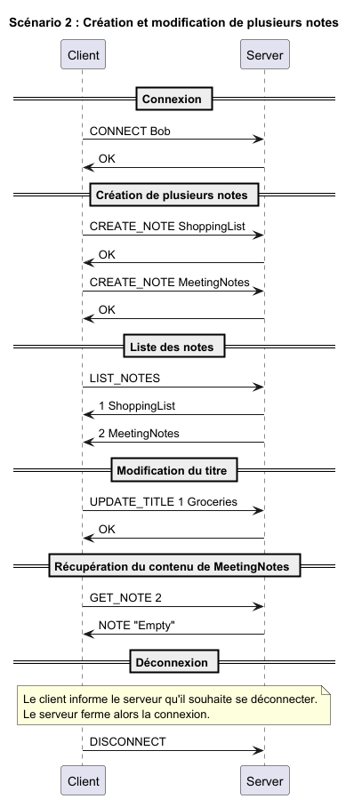
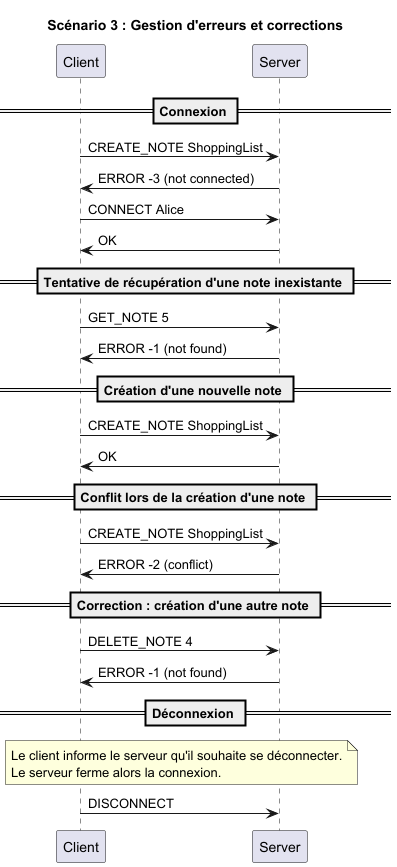
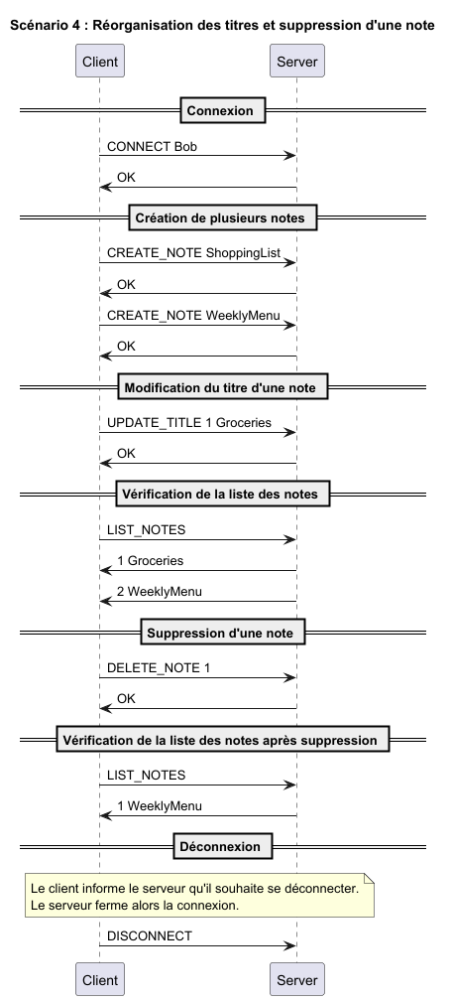
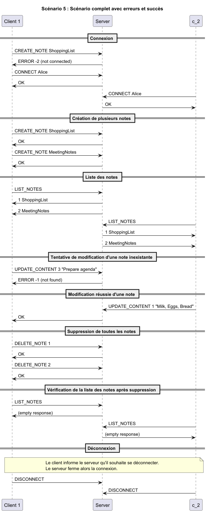

Le protocole de l'application "No-Tion" est un protocole de communication qui permet à un client de gérer ses notes en communiquant avec un serveur.
Il utilise le protocole de transport TCP pour assurer la fiabilité de la transmission des données.
Le port qu'il utilise est le numéro de port 16447.
Le protocole de l'application "No-Tion" est un protocole de transport de texte où chaque message doit être encodé en UTF-8 et délimité par un caractère de nouvelle ligne (\n).
Les paramètres composés d'espaces doivent être mis entre guillemets doubles (").
Les messages sont traités comme des messages textuels.
La connexion initiale doit être établie par le client.
Une fois la connexion établie, le client peut envoyer des commandes au serveur pour gérer ses notes.
Le serveur doit vérifier si les commandes reçues sont valides et les exécuter.
Si une commande est invalide, le serveur doit renvoyer un message d'erreur au client.
Sur un message inconnu, le serveur doit renvoyer un message d'erreur au client.
Le client envoie une commande de connexion au serveur pour s'authentifier avec son nom d'utilisateur.
CONNECT <name>
OK : connexion réussie
ERROR <code> : connexion échouée
Codes d'erreurs : 3
Le client envoie une commande de déconnexion au serveur pour se déconnecter.
DISCONNECT
None.
Le client envoie une commande de création de note au serveur. Pour simplifier le code, le client devra d'abord créer une note, puis la modifier pour ajouter le contenu.
CREATE_NOTE <titre>
OK
ERROR <code> : erreur lors de la création de la note
Le client envoie une commande de suppression de note au serveur.
DELETE_NOTE <titre>
OK
ERROR <code> : erreur lors de la suppression de la note
Le client envoie une commande pour obtenir la liste des notes au serveur.
LIST_NOTES
1 <titre de la note 1>
2 <titre de la note 2>
...
n <titre de la note n>
Le client envoie une commande pour récupérer une note au serveur.
GET_NOTE <index>
NOTE <contenu>
ERROR <code> : erreur lors de la récupération de la note
Le client envoie une commande pour modifier une note au serveur.
UPDATE_CONTENT <index> <nouveau contenu>
OK
ERROR <code> : erreur lors de la modification du contenu de la note
Codes d'erreurs : 1
Le client envoie une commande pour modifier le titre d'une note au serveur.
UPDATE_TITLE <index> <nouveau titre>
OK
ERROR <code> : erreur lors de la modification du titre de la note
Le serveur envoie un message d'erreur au client si une des requêtes est invalide.
ERROR <code>
Les codes d'erreur sont les suivants :




